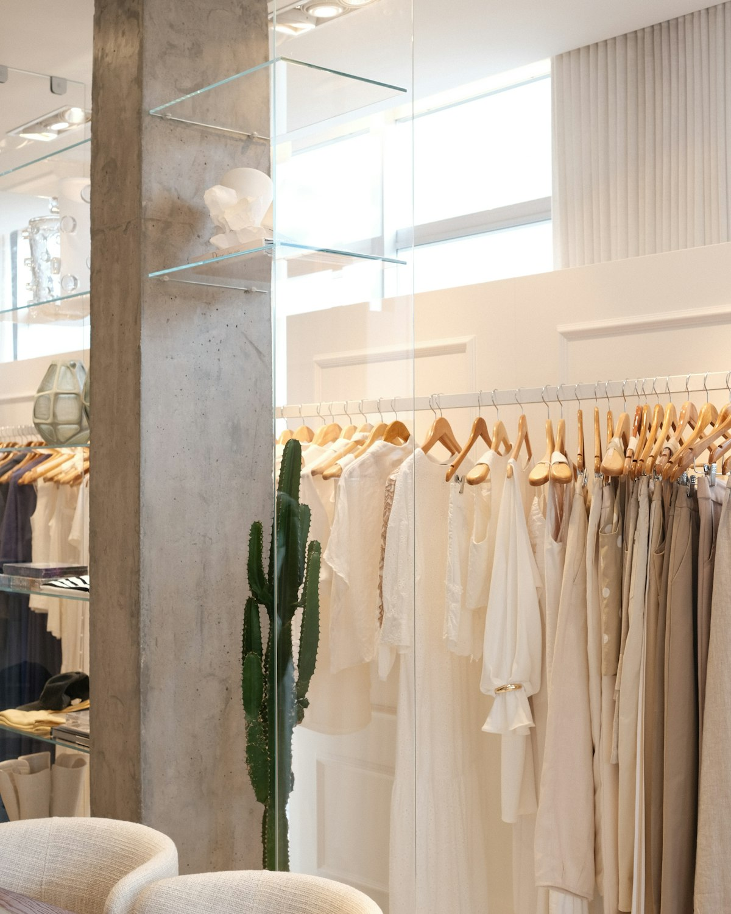
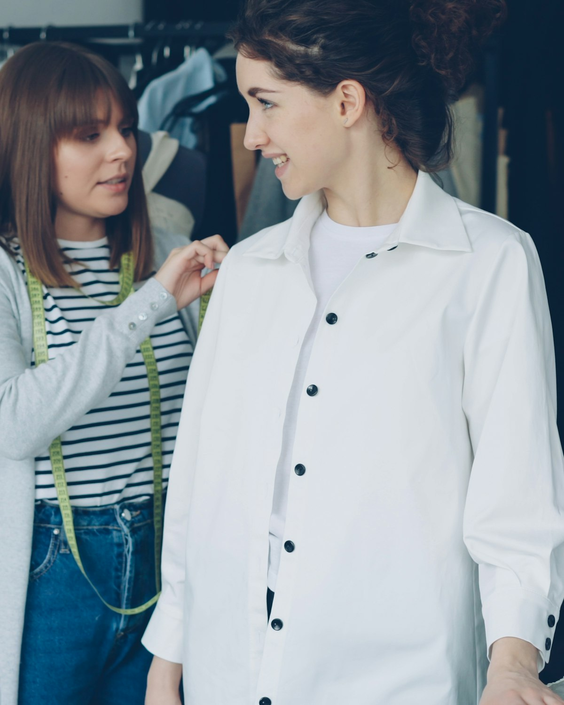

Ein Modehaus ist kein Regal — es ist ein Gespräch über Stil.
Deshalb zeigt diese Seite zuerst Bilder statt Listen: zwei Garderoben, ein paar Beispiel-Looks und ein kurzer Weg zu Ihrer persönlichen Beratung.
Womit dürfen wir Ihnen helfen?
Damen, Herren oder beides — wählen Sie, dann leiten wir Ihre Anfrage direkt an die passende Beratung weiter.
Für welchen Anlass kleiden Sie sich ein?
Vier Anlässe als Startpunkt — jede Kachel führt direkt zur Beratungs-Anfrage.
Beispiel-Leistungsspektrum dieser Konzeptvorschau — das echte Sortiment stimmt der Laden mit Ihnen ab.
Beispielfoto (Symbolbild)Ihr Modehaus in der Mosbacher Innenstadt
Ein Ort, an dem Sie sich Zeit nehmen dürfen: Damen- und Herrenmode unter einem Dach, mit Blick für den Anlass und für das, was zu Ihnen passt.
- Damen- und Herrenmode unter einem Dach
- Beratung mit Zeit statt Stückzahl
- Mitten in der Mosbacher Fußgängerzone
Beratung, die zuhört
Ein Beispiel dafür, wie Ihre Beratung aussehen könnte — was der Laden tatsächlich anbietet, bespricht er direkt mit Ihnen.
Beispiel-Leistungsspektrum dieser Konzeptvorschau — kein Angebot des Betriebs.
Beispielfoto (Symbolbild)-
Stilberatung
Was zu Figur, Anlass und Alltag passt — als Ausgangspunkt für das Gespräch.
-
Anlassberatung
Vom Vorstellungsgespräch bis zur Hochzeit — ein Blick fürs Ganze.
-
Änderungsservice (Beispiel)
Ob ein solcher Service angeboten wird, klärt der Laden direkt mit Ihnen.
In drei Schritten zur Beratung
Anfragen
Bereich, Anlass und Wunschtermin — in zwei Minuten notiert.
Beraten
Wir melden uns und besprechen, wonach Sie suchen.
Anprobieren
Ihre Auswahl wartet zum Wunschtermin auf Sie im Laden.
Beispiel-Ablauf der Konzeptvorschau — den tatsächlichen Ablauf stimmt der Laden mit Ihnen ab.